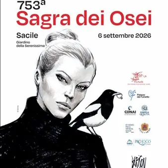

da ven 4 set a dom 6 set
753ª Sagra Dei Osei
Mostra mercato-esposizione di uccelli da canto e da voliera di antiche origini.
 Indicazioni
Indicazioni
- Costi e prenotazioni
- Costo non indicato · Prenotazione non indicata
- Programma
- Programma da verificare. Apri la fonte ufficiale per orari e possibili aggiornamenti.
- In caso di maltempo
- Nessuna indicazione specifica pubblicata.
- Note
- Acquisito automaticamente dalla fonte.
L’EVENTO
Descrizione completa
Description Noto in tutta Italia, è un mercato-esposizione di uccelli da canto e da voliera che si tiene a fine estate. Vanta origini antichissime: il primo cenno ufficiale di questa fiera si ha con l’arrivo in Friuli del patriarca Raimondo della Torre il 2 agosto del 1274. In download il programma dettagliato della manifestazione.
Organized by: Associazione Pro Sacile tel. 0434 72273 info@prosacile.com
PromoTurismoFVG is not liable for the accuracy of any information included or for the total or partial non-fulfilment of the events proposed by the organiser. Further information can be obtained directly from the organiser, who can be found under the heading: “organised by”. PromoTurismoFVG is not liable in the event that the events, contents and images inserted may possibly damage the common sense of decency. PromoTurismoFVG also reserves the right, in its sole discretion, to obscure any content deemed to be ambiguous in nature, in advance or subsequent to any report, as well as proceeding with actions in the locations deemed most appropriate.
IL PROGRAMMA
Programma e orari
Appuntamenti raccolti dalle fonti elencate. Dove manca un orario, non è ancora disponibile in questa scheda.
Programma pubblicato
- Dal 2026-08-02 al 2026-09-06
INFORMAZIONI UTILI
Prima di partire
- Controllare la fonte prima di partire.
ORGANIZZAZIONE